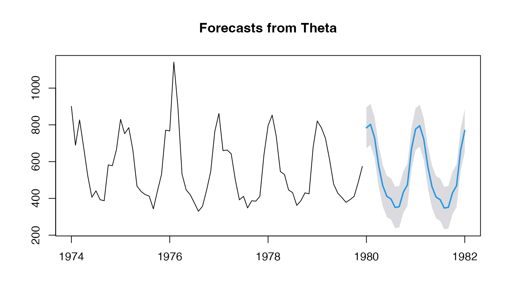
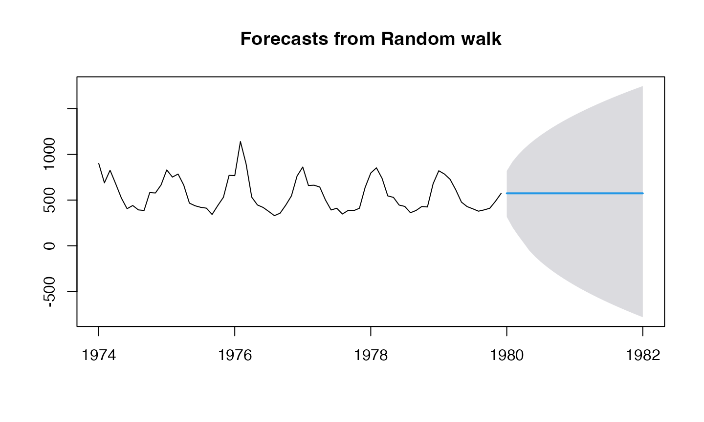
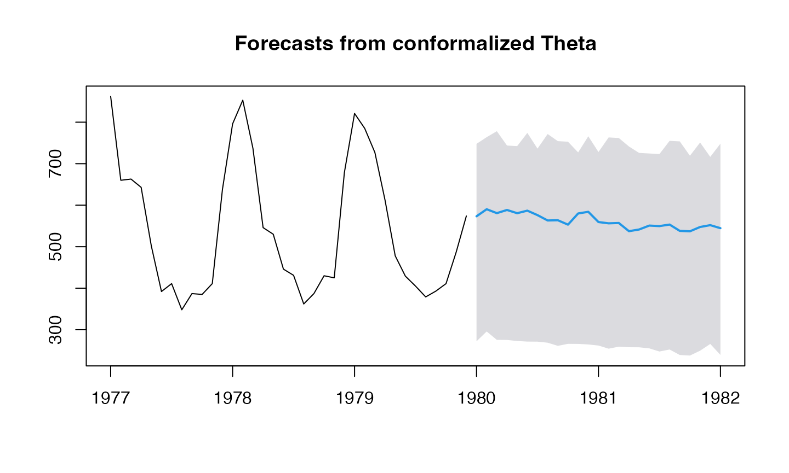

Generic forecasting and conformal prediction
generic-conformal.RmdObtain forecasts for any object of class forecast, and
conformalize them.
0 - Packages
library(ahead)## Registered S3 method overwritten by 'quantmod':
## method from
## as.zoo.data.frame zoo
y <- fdeaths #AirPassengers #Nile #mdeaths #fdeaths #USAccDeaths
h <- 25L1 - Generic forecaster
Unified interface
plot(ahead::genericforecast(FUN=forecast::thetaf, y, h))
plot(ahead::genericforecast(FUN=forecast::meanf, y, h))
plot(ahead::genericforecast(FUN=forecast::rwf, y, h))
plot(ahead::genericforecast(FUN=forecast::ets, y, h))
plot(ahead::genericforecast(FUN=forecast::auto.arima, y, h))
plot(ahead::genericforecast(FUN=forecast::tbats, y, h))
plot(ahead::genericforecast(FUN=HoltWinters, y, h))
plot(ahead::genericforecast(FUN=forecast::Arima, y, h))
plot(ahead::genericforecast(FUN=ahead::dynrmf, y, h))
plot(ahead::genericforecast(FUN=ahead::dynrmf, y=y, h=h, fit_func=e1071::svm, predict_func=predict))
plot(ahead::genericforecast(FUN=ahead::dynrmf, y=y, h=h, fit_func=glmnet::cv.glmnet, predict_func=predict))
plot(ahead::genericforecast(FUN=forecast::tbats, y=y, h=h, use.box.cox = TRUE, use.trend=FALSE))
plot(ahead::genericforecast(FUN=forecast::rwf, y=y, h=h, lambda=1.1))
2 - Conformal prediction
y <- USAccDeaths
obj <- ahead::conformalize(FUN=forecast::thetaf, y, h); plot(obj)
obj <- ahead::conformalize(FUN=forecast::meanf, y, h); plot(obj)
obj <- ahead::conformalize(FUN=forecast::rwf, y, h); plot(obj)
obj <- ahead::conformalize(FUN=forecast::ets, y, h); plot(obj)
obj <- ahead::conformalize(FUN=forecast::auto.arima, y, h); plot(obj)
obj <- ahead::conformalize(FUN=forecast::tbats, y, h); plot(obj)
obj <- ahead::conformalize(FUN=HoltWinters, y, h); plot(obj)
obj <- ahead::conformalize(FUN=forecast::Arima, y, h); plot(obj)
y <- AirPassengers
obj <- ahead::conformalize(FUN=forecast::thetaf, y, h); plot(obj)
obj <- ahead::conformalize(FUN=forecast::rwf, y=y, h=h, drift=TRUE); plot(obj)
obj <- ahead::conformalize(FUN=forecast::ets, y, h); plot(obj)
obj <- ahead::conformalize(FUN=forecast::tbats, y, h); plot(obj)
obj <- ahead::conformalize(FUN=HoltWinters, y=y, h=h, seasonal = "mult"); plot(obj)
obj <- ahead::conformalize(FUN=ahead::dynrmf, y=y, h=h,
fit_func=glmnet::cv.glmnet, predict_func=predict); plot(obj)
y <- fdeaths
obj <- ahead::conformalize(FUN=forecast::thetaf, y=y, h=h, method="block-bootstrap"); plot(obj)
obj <- ahead::conformalize(FUN=forecast::rwf, y=y, h=h, drift=TRUE, method="bootstrap"); plot(obj)
obj <- ahead::conformalize(FUN=forecast::ets, y, h, method="kde"); plot(obj)
obj <- ahead::conformalize(FUN=forecast::tbats, y=y, h=h, method="surrogate"); plot(obj)
obj <- ahead::conformalize(FUN=HoltWinters, y=y, h=h, seasonal = "mult", method="block-bootstrap"); plot(obj)
obj <- ahead::conformalize(FUN=ahead::dynrmf, y=y, h=h,
fit_func=glmnet::cv.glmnet, predict_func=predict, method="surrogate"); plot(obj)## Warning: Option grouped=FALSE enforced in cv.glmnet, since < 3 observations per
## fold
## Warning: Option grouped=FALSE enforced in cv.glmnet, since < 3 observations per
## fold